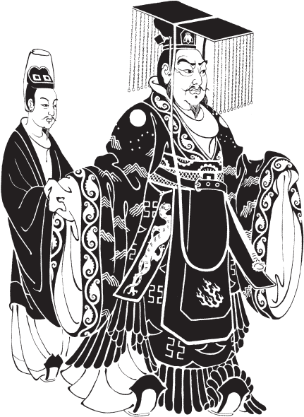
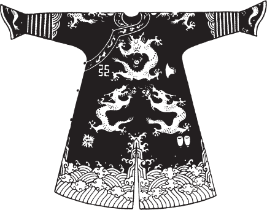
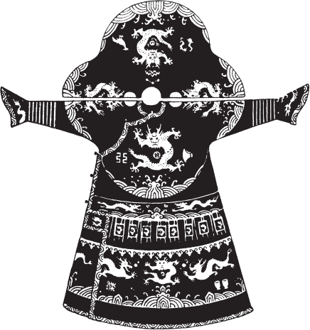
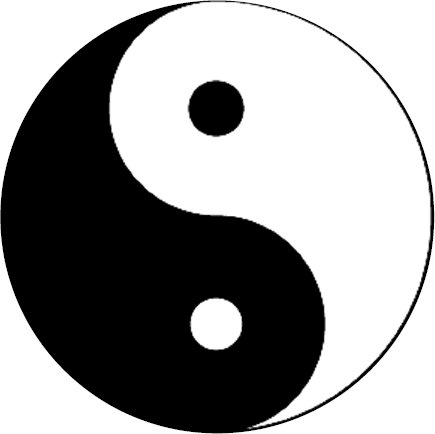
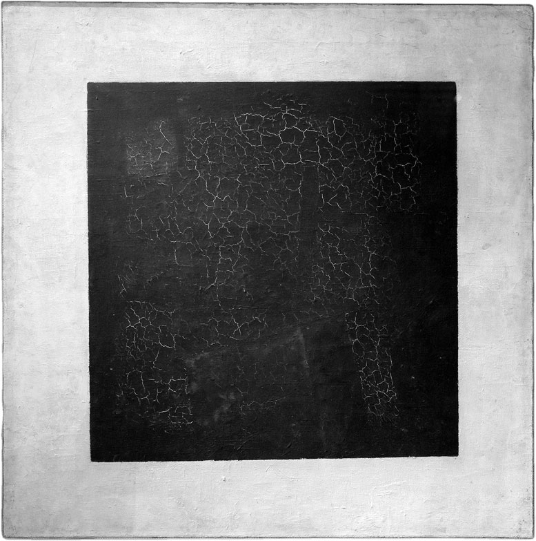
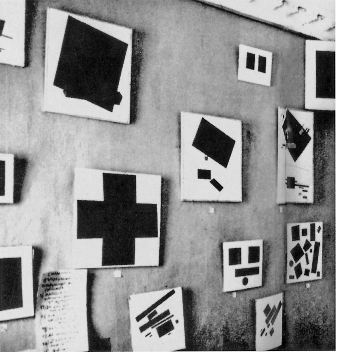
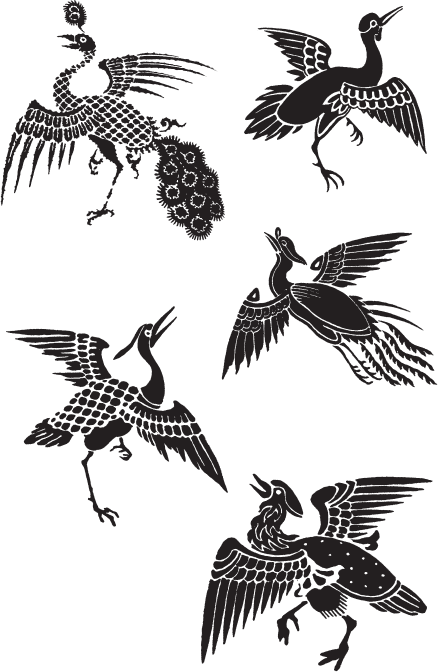

Capítulo 4
Puente sobre el abismo
«Aquello fue hace mucho tiempo,
en otro planeta».
A. Vertinski
«La poesía es una traducción.
La traducción de verdades metafísicas
a la lengua terrena».
I. Brodski
I. El «ba-gua» como cosmogonía arcaica de la Antigua China
Esto sucedió hace muchísimo tiempo. Tan tiempo atrás que es realmente imposible representarse el tiempo que nos separa, por ejemplo, de la construcción de las Grandes Pirámides de Guiza, de los conjuntos de Stonehenge o del Laberinto de Creta. Según Rudyard Kipling, «aquello fue cuando el alma del hombre era inmortal». Pues bien, en aquel tiempo (según la historia mitológica) a uno de los emperadores chinos, que vivía a comienzos del III milenio a. C., le ocurrió un prodigio.
Hay que decir que apenas nos representamos los albores mismos del III milenio a. C. en China. El mundo material de las cosas, el modo de vida, el pueblo: todo el hábitat. Sabios, artistas y simples profanos dibujan cuadros diversos según el grado de información y de imaginación. Por eso la noción de «prodigio» tiene todo el derecho real a ocupar un lugar en nuestra historia. Y, más precisamente, en cualquier historia e incluso en la vida privada, el «prodigio» es un gran motor y estímulo.
La historia mitológica, preescrita, prehistórica, siempre abunda en prodigios. Pero «esto» dejó tras de sí una huella que, desde hace ya cinco mil años, los sabios y los científicos no logran descifrar del todo.
La leyenda cuenta de cierto emperador Fu-si, dotándolo de propiedades de mago tanto como de hombre real. Han llegado hasta nosotros imágenes del emperador que describen ambas sus esencias. Lo vemos a él y a su esposa representados en pleno vuelo, como «daimones». Son quimeras, gentes-pez, con colas de pez, de sirena. Pero he aquí la paradoja: en las manos de Fu-si hay un objeto que mide ángulos. El instrumento de los magos, de los alquimistas, de los masones y de los carpinteros de hoy. Los esposos aparecen como primeras personas del Estado, pero al mismo tiempo sus retratos son harto convencionales. Las imágenes de Fu-si, creadas en distintas épocas, son testimonios de su multilateral significación en la cultura. ¿Realidad o mito, fue o no fue? Es irrelevante, pues lo acontecido en la historia se refiere unánimemente tanto a su biografía como a la historia.

Pues bien, Fu-si, según se cuenta, meditaba a la orilla de un río y vio que del agua salía un caballo. Grande, reluciente al sol, húmedo del agua, arrastraba tras sí una cola larguísima y, al parecer, tenía alas a la espalda. Su color era de lo más inusual, es decir, nin-gu-no, indeterminable. Al color del caballo con rasgos de dragón volveremos, pues ese color es muy importante. Por ahora, el caballo TRES VECES (número natural para el mito) rodeó a Fu-si y se sentó dándole la espalda. Sobre el lomo se veían con claridad signos, que Fu-si copió. He aquí cuáles:



Los signos eran ocho, y cada uno de tres trazos. Pero para nosotros bastan por ahora cuatro. Con el tiempo, las ocho trigramas (así llamaron a los trazos) componen la base del antiguo sistema arcaico chino del mundo: el «ba-gua». «Ba-gua» significa «los ocho ángulos». He ahí la raíz de la que crece el árbol del conocimiento y la explicación de todo lo que existe. Fu-si, ya fuera que memorizara, ya fuera que dibujara el octógono, y así comenzó la historia de la interpretación de las ocho trigramas, que dura hasta hoy.
El caso histórico-mitológico del «prodigio del caballo» revela, en la fase más temprana de la cultura china, la actitud ante el «prodigio». Y aunque el caballo-dragón llegó (según la leyenda) de la constelación del Dragón, la patria mística de Fu-si, su encarnación en los límites terrestres es completamente racional. El acontecimiento con Fu-si es cierta experiencia de la «realidad interior» en la relación entre lo celeste y lo terrestre, lo ultraterreno y lo de este lado. Es ejemplo del verdadero equilibrio de ambos principios en una conciencia dotada. Las personalidades artísticamente dotadas y los sabios «ven» lo que jamás verá y, por tanto, jamás comprenderá el hombre ordinario. Que se trate de la realidad interior o exterior carece de importancia.
Cuentan que los discípulos preguntaron al sabio Confucio qué pensaba del porvenir. Y entonces el maestro dijo: «El fénix no vuela hasta nosotros, el caballo-dragón con dibujo en el lomo no emerge del río: temo que todo se haya acabado». Como todas las sentencias de Confucio, sigue siendo actual hasta hoy. Entre ambos acontecimientos median dos mil quinientos años. ¡Qué potente renovación, qué descubrimiento se consideró en China la historia del caballo! ¿No es algo parecido a la manzana caída del árbol (¿del cielo?) a los pies de Isaac Newton? Solo que más global, más potente.
El caballo, además de los signos enigmáticos, dejó también a Fu-si un espejo, lo cual no vale menos que las ocho trigramas del «ba-gua». Fu-si estaba seguro, además, de que el caballo había llegado de la constelación del Dragón, su lejana patria, y de que él, Hijo del Cielo, era un dracónida. Desde entonces los emperadores chinos son enviados del Cielo, y su país, China, es el «Bajo el Cielo». El dragón es, a su vez, la figura central del panteón zoomórfico y símbolo de la Renovación o de las Metamorfosis. ¿Por qué no creer en el «prodigio» o en la «revelación» en los caminos del conocimiento, si el «prodigio de Fu-si» tiene semejante significación en la cultura durante cinco mil años? ¿Y qué puede compararse con este acontecimiento? Se dice también que Fu-si no conocía la escritura ideográfica ni la caligrafía, y por eso se explicaba con el lenguaje de los trazos continuos e interrumpidos.
Aún más: según la tradición, en algún punto fronterizo entre las dinastías Shang y la Zhou Occidental (siglo XII a. C.), lo que corresponde a la Guerra de Troya en la Europa mediterránea, Wen-wang, padre de Wu-wang, escribió la primera significación ideográfica de las trigramas. Su autoría no está confirmada por nada, pero así se suele aceptar. Al fin y al cabo, alguien lo hizo.
Tres líneas superiores continuas significan el Cielo. El Cielo: esencia absolutamente masculina y fecundante. Y, además, la luz: el yang. Y tres líneas inferiores interrumpidas: la esencia absolutamente femenina y absorbente, la Tierra: el yin. Unidad de los contrarios. Tensión y equilibrio cósmicos mundiales, al límite; potencial absoluto: Cielo—Tierra; Luz—Tiniebla; lo firme—lo blando; lo frío—lo caliente; norte—sur; el Espíritu y la Materia.
escribió en el siglo XII el sabio-poeta Dun Yu. Definió lo principal: las tensiones de las dos trigramas, del Cielo y de la tierra, su principio activo de los comienzos, el espíritu único de la ley de la naturaleza, como metamorfosis, es decir, transformación: transmutación: transfiguración.
La trigrama derecha es vertical. Dos líneas interrumpidas a los lados con una continua en el interior. Es la luz que corta las tinieblas. O la salida del sol, el este, el nuevo comienzo de la vida.
Los signos simbólicos tienen muchos significados: cromáticos y numéricos, nociones de la luz, de la oscuridad, del cielo, de la tierra, del orto, de la primavera, del este, del sur, de todos los elementos naturales. De sus posibles combinaciones y metamorfosis. Pero de esto más abajo y en su momento.
La trigrama izquierda no es solo la necesaria en el círculo del equilibrio, sino, quizá, la principal. Es la combinación de dos líneas continuas luminosas y de una interrumpida. Dicho de otro modo: la sombra dentro de la luz, la tiniebla que corta la luz. Dicho de otro modo: la partida, el oeste, la puesta del sol. No decimos muerte. El oeste es la partida en oposición al ascenso del este. La muerte no existe. Hay partida, inmersión en la intemporalidad y la informidad del no-ser para retornar de nuevo en otra forma adquirida.
La tensión de las oposiciones, la interdependencia sin la cual la vida es impensable, el círculo del desplazamiento de la luz a la tiniebla, el renacer hacia una nueva encarnación. Hasta aquí dejamos momentáneamente el relato sobre la idea arcaica y primaria del «ba-gua», donde de las ocho hemos tomado solo cuatro significaciones.
II.
En 1960 salió en lengua rusa el «Libro de las Mutaciones», o «I Ching», en la traducción de Yulián Shchutski, represaliado en 1936 por su vinculación con la antroposofía. A Shchutski le debemos lo mismo que al traductor de Homero al ruso, A. Gnédich. Gracias a estas personas admirables Rusia adquirió tesoros inapreciables de la cultura universal. El «I Ching» lo crearon generaciones de filósofos-científicos chinos. Es un libro sobre los caminos de la mutación, sobre el Universo y el Hombre, sobre lo Eterno y lo Instantáneo. Pues el instante es parte de la eternidad y participación en ella. El «I Ching» atraviesa los siglos de toda la cultura china. Testimonio del altísimo desarrollo, de la síntesis de la conciencia científica, artística y poética. Pero hay en él algo que permanece enigma hasta hoy. Con él adivinaban sobre la guerra y la paz los emperadores de China, que no confiaban en nadie. Sin haber envejecido lo más mínimo, ha llegado hasta nuestro tiempo. Pueden no creerlo, pero el director de cine italiano Federico Fellini llevaba el «I Ching» constantemente en el bolsillo y, en caso de necesidad, consultaba con ese extraño libro. Interesa cada vez más a los filólogos, a los historiadores y a los matemáticos (la combinatoria). Los sesenta y cuatro versos del «I Ching» los comenta más de una generación de sabios «de alto saber», presentando todo lo existente como cadena ininterrumpida de oposiciones y mutaciones.
En verdad es imposible comprender cómo señala el texto hacia el cielo que conoce la grandeza del comienzo y hacia la Tierra que consuma el nacimiento de las cosas; es decir, hacia lo predestinado y su realización.
Dos trigramas: el yang (la continuidad) y el yin (la interrupción), es decir, 2 elevado a la 6.ª potencia y resulta al final 64. Las 64 variantes de todas las combinaciones binarias posibles de yang y de yin. A Lao-tsé le preguntaron qué es el «tao». Dijo: «Una vez "yang", una vez "yin". Eso es el "tao"». Descripción absoluta de todas las situaciones y posiciones psicológicas posibles en 64 aforismos poéticos, cada uno de los cuales se compone, a su vez, de 6 líneas poéticas-posiciones. Se sabe, por ejemplo, que el escritor alemán Hermann Hesse escribió su novela «El juego de abalorios» tomando como base la hexagrama n.º 5 «We», de lo cual dejó constancia en su propio comentario a la novela.
En ciertos casos, para designar la «tierra» y el «cielo», en lugar de los trazos-trigramas que conocemos se emplea la simbología geométrica de dos figuras: el círculo y el cuadrado. El círculo o la esfera simbolizan el cielo. Semejante al cielo, es sin comienzo y sin fin. Y cada punto del círculo puede tomarse por centro. Según la simbología cromática admitida en la Antigua China, el «Cielo», el yang, el principio masculino, el impulso primario del ser, es la «luz». El significado cromático de la luz es el color negro. Así, si queremos explicar la esencia del Cielo-yang, dibujaremos un círculo negro. El espacio luminoso divino absoluto está designado, en otras culturas sacras, casi siempre con pintura dorada. Por ejemplo, en la pintura rusa antigua el campo del icono es, por regla general, dorado. El oro es el color de la luz divina o del espacio luminoso del que nos «aparecen» las perfectas imágenes iconográficas de los santos mártires y de los demás héroes del iconostasio. No están de pie, sino que, privados de la atracción terrestre, apenas rozan la franja convencional de la «tierra». Y en China la luz es negra, pues el negro es la máxima concentración de luz en la naturaleza.

Otra designación cromática del círculo es el color azul. El azul, elemento del cielo: el agua, que fecunda la tierra. De modo que el Cielo es, visualmente, o tres trazos continuos, o el círculo. El Cielo como noción de luz: círculo negro. El Cielo como noción del elemento agua: círculo azul. Pero el Cielo no tiene caracteres de tiempo. Es sin comienzo. El agua da vida a la tierra, es decir, se une a la noción de tiempo. Agua—vida—tiempo. Surge el tema de la Tierra.
En cuanto a la Tierra, ella es (de una vez y para siempre) cuadrada. La Tierra es inmovilidad; el Cielo, movimiento. La Tierra tiene referencias iguales por los cuatro puntos cardinales: norte, sur, oeste, este. Cuatro estaciones del año: invierno, otoño, verano, primavera. Cuatro momentos del día: noche, mañana, mediodía, tarde. En esa repetición cíclica del tiempo hay un ritmo nítido del ser natural, la posibilidad de una larga observación de la vida de la naturaleza, de los árboles, de las aves, de los insectos, de los nacimientos y de los ocasos. Semejante al círculo del Cielo, la Tierra tiene también sus colores-símbolos preferentes. La idea espiritual del Cielo está en el negro; la naturaleza física de la Tierra, en el amarillo. La materia de lo terrenal se afirma en el amarillo. Y el elemento de la Tierra es el Fuego. El fuego es rojo. Dos colores del Cielo-Círculo: el negro y el azul. Dos colores de la Tierra-Cuadrado: el amarillo y el rojo. Y si se mezclan, se unen, se casan el elemento del Cielo-agua (el azul) con la materia de la Tierra (el amarillo), nace el verde: el orto y el renacimiento del este. La luz que penetra las tinieblas y da energía de vida a todo lo que existe.
Los descubrimientos arqueológicos modernos de enterramientos de la dinastía Shang, es decir, de los siglos XVIII–XIX a. C., en el desierto del Taklamakan ilustran de manera elocuente las fantasías más audaces respecto del grado de desarrollo de la cultura china ya en aquellos tiempos remotos. Vasijas de bronce de forma compleja y de asombroso repujado, tinajas para el teñido de sedas y lanas. El análisis de la pintura conservada en las tinajas de teñido más antiguas indica los colores: negro, azul, rojo, amarillo, verde. La ropa, los tocados (desde los gorros de la gente sencilla hasta los complejos y solemnes del emperador) de color negro. El traje y sus colores estaban predestinados. El emperador no se veía como mera primera persona, sino como enviado, signo de las Fuerzas Cósmicas. Su gorra negra, guarnecida de seda carmesí, con largas viseras rectangulares alargadas, está adornada con bolitas colgantes de jade azul, verde, rojo, amarillo y negro. Cuenta la fama que cuando el emperador I Li Shin Bao (el conquistador de Manchuria) salió ante la corte con blusa amarilla y faldón negro (falda-pantalón) con gorrita negra en la cabeza, los cortesanos se desplomaron en tierra. Comprendieron que tenían delante al señor de los elementos. Los colores negro y amarillo no se mezclaban, sino que se combinaban solo el uno junto al otro, pues ¿quién mezclaría la luz y la tiniebla? Pero conjugados de cierto modo componen uno de los signos más potentes y solemnes.
Una de las ilustraciones más elocuentes del sistema «ba-gua» en el traje chino. No solo sobre la bata de los emperadores está pintada la micromodelo del mundo, donde se representa toda la universidad esotérica, sino incluso en el corte de la ropa. Así, por ejemplo, el puño de la manga está cortado en forma de pezuña de caballo. El traje del campesino y de la dama noble presenta la imagen del hombre como parte del Universo Cósmico. Tal es la síntesis artística, la filosofía de esta cultura asombrosa.
Entre las culturas antiguas que nos han llegado, solo China y la antigüedad mediterránea conservan hoy actualidad. Las demás —las del Continente Negro, las del Yucatán, Egipto, Creta— quedan como citas nostálgicas de la memoria cultural. ¿Por qué sucedió así? La civilización de Confucio es hoy incluso en mayor medida importante en China de lo que Grecia lo es en Europa.
Para Europa, heredera del mundo antiguo, el objeto principal y capital de representación, de estudio, de investigación social y psicológica sigue siendo el hombre. El hombre, sus actos, sus relaciones con el hábitat. En China, en cambio, al revés: ante todo y sobre todo, la intemporalidad del paisaje, el mundo de la naturaleza, la Tierra y el Cielo; es decir, primero el medio ambiente y el hombre como parte del medio.
Cuando en Europa el astuto mozo de Ítaca inventó el caballo-máquina para tomar Troya, en China ya fabricaban sedas y pólvora. ¡Ojalá hubieran sabido los aqueos o los griegos de los fuegos artificiales o de la pólvora chinos! Creo que fue bueno que no lo supieran; si no, quizá no veríamos la «Hélade dorada», el «orden» y las Olimpiadas. La época de la dinastía Shang creó el fundamento sólido, la base estilística de los géneros y direcciones del arte chino. Los chinos ya entonces, en los siglos XIII–XII a. C., escribían con tinta y pinceles de bambú, y comían no corzo en asador, sino todo lo que crece, florece, vuela, chapotea, repta y se remueve. Crearon una cocina que hasta hoy es célebre en el mundo entero, con restaurantes de cocina china y cocineros en todas las ciudades del mundo.
La indistinguibilidad de sabores de los ingredientes en la cocina china, el conjuro alquímico de las transformaciones, la transfiguración de los productos es, quizá, el ejemplo más concreto de la ley universal de la naturaleza: las METAMORFOSIS.
El lenguaje de los círculos y cuadrados de colores del yang y el yin está lleno de sentido profundo y misterioso. El Templo del Cielo de Pekín, construido en el siglo XII, sigue las reglas de la observación más estricta de todo el alfabeto del «ba-gua». La forma del templo, redonda como un vagón cisterna, es negra. La adornan tres techos circulares azul oscuro, semejantes a sombreros de seta o tocados de paja de arroz. Todavía no hemos mencionado que el color no está asignado arbitrariamente a ninguna forma, sino que existe objetivamente en la naturaleza al margen de nuestra conciencia. El color en la simbología de China no es casual, igual que los números. El número 3 es el número ideal de la indivisibilidad, de la no-paridad. En todas las lenguas, en todas las culturas fue y sigue siendo el número de Dios. La Trinidad es símbolo de fe también en el cristianismo. Tres es el número sagrado de las culturas mediterráneas, y de las tropico-africanas, y de las latinoamericanas. Volveremos a este número todavía más de una vez. Por eso el número de techos azules sobre el cilindro negro y redondo del Templo del Cielo es tres.
El Templo del Cielo del «Bajo el Cielo» (así se llamaba China) reposa sobre un basamento cúbico. Podemos suponer que el cubo es amarillo y la plataforma superior, roja. El Templo del Cielo está orientado según los cuatro puntos cardinales, como una brújula.
La brújula fue inventada en China hace muchísimo tiempo, y al principio el papel de aguja lo cumplía una cuchara hecha de menas especiales y fijada sobre una base cuadrada. Las referencias en la construcción eran muy importantes, y se tenían especialmente en cuenta los cambiantes flujos de aire en combinación con las referencias inmóviles de la Tierra. En China se creó toda una ciencia de la proyección; la llamaron «feng-shui» y se le sigue fielmente hasta hoy. En Europa el «feng-shui» es simplemente una moda generalizada. Ay, de diletantes. El «feng-shui» es una ciencia antigua que tiene en cuenta los vínculos del hombre con todo su hábitat. La doctrina de la unidad del mundo aplicada a la vida procede de la filosofía natural de las ideas antiguas.
El Templo del Cielo fue rehecho, ampliado, pero lo principal permaneció inmutable. Pintaron el templo de quimeras, representando los símbolos del Cielo y de la Tierra. Dragones, serpientes, tortugas: símbolos esotéricos de la inmortalidad y del infinito. Uno de los símbolos de la Tierra es la tortuga. ¿Qué tiene de interesante la tortuga? El reptil gigante vive ora en tierra firme, ora en el agua, pero los huevos los pone en la arena, protegiéndolos con fiabilidad del expolio. La tortuga es símbolo de sabiduría y de inmortalidad. Con su imagen está vinculado el libro «I Ching», pues se adivinaba buscando la propia hexagrama sobre el caparazón de la tortuga. Con la tortuga está ligada una multitud de leyendas y creencias, de predestinaciones misteriosas y de recetas médicas. Es interesante que en la mitología de la Antigua Grecia la tortuga ocupa también su lugar. El joven Hermes, deseando agradar a su hermano Apolo, cazó una tortuga y con su caparazón hizo un excelente instrumento musical. Tensó sobre el caparazón venas de búfalo, y así resultó una espléndida cítara, sin la cual Apolo es impensable. Con su mano divina pasaba por las cuerdas y afinaba en la armonía universal de la «música de las esferas», como unidad de lo celeste y lo terrenal. Al hablar de los enigmas de las culturas antiguas, no olvidemos a la tortuga.
III. Algunas palabras sobre China en Europa
A lo largo de milenios, la cultura de China ha ejercido influencia sobre todos los países del mundo.
La llegada de China a Europa, a la cultura europea, es de muchos caminos. Las sedas chinas, las especias, la turquesa de la Gran Ruta de la Seda. El viaje de Marco Polo en el siglo XIII y el libro que él (o no él) escribió en la cárcel de Génova: «Sobre la diversidad del mundo». Describe la China fantástica de la época de las conquistas mongolas, Pekín y la dinastía Da Yuan. Se dice que entre las rarezas Marco Polo trajo una pieza de jade y una tacita de porcelana. La porcelana fue y sigue siendo valor nacional de China (¡supuestamente desde el neolítico!). El caballo bien podría darle a Fu-si un tiesto de porcelana. Ya desde el siglo XIV, por caminos complejos, los mercaderes venecianos poseían la cara porcelana china. La historia de las piezas de porcelana es, en gran parte, la historia de China. Jarrones, tacitas, cuencos, figurillas escultóricas monocromas azules y verdes, con finas vetas de craquelé de una cocción especial. Únicas, de formas y proporciones perfectas, no solo adornaban las colecciones de los palacios de los emperadores chinos, sino que eran codiciadas por la nobleza de Europa. Los alquimistas trabajaban sin descanso en los misterios de las tacitas y jarrones translúcidos y «cantores».
Los marineros portugueses y holandeses, desde fines del siglo XVI y comienzos del XVII, convirtieron los valores porcelanísticos chinos en objeto de un raro comercio de exportación.
Desde comienzos del siglo XVII, por los puertos holandeses llegan a Europa el papel, los fuegos artificiales (los fuegos artificiales europeos son de origen chino), muchas otras mercancías y, lo principal, la porcelana azul, de pintura bajo cubierta. Porcelana inapreciable, carísima, cuyo secreto buscaron largamente en las fábricas secretas de Delft. Luego los holandeses aprendieron a fabricarla y comerciaron con ella bajo apariencia china, hasta que fueron desenmascarados. El secreto de las fábricas clasificadas que producían el fino tiesto porcelánico se guardaba no menos que el arma ultrasecreta de hoy. En una palabra, un auténtico policial. En las relaciones con China hay mucho de fabuloso y fantástico. Desde el siglo XVII penetraron en China los omnipresentes jesuitas. Y desde la segunda mitad del XVII y comienzos del XVIII empezó en Europa la moda de todo lo chino. Pabellones-farol chinos en los parques, muebles lacados con incrustaciones de nácar. Sombrillas, abanicos, sedas, telas estampadas para tapizar muebles y paredes con motivos de la vida china. Biombos, piezas de laca, cartón-piedra y demás. La «chinoiserie» estuvo de moda en la corte de Luis XV y, por supuesto, en Petersburgo—Peterhof, empezando por Pedro el Grande. «Felicita, las calles, los puentes y todos los arbitrios chinos», escribe Ajmátova sobre Tsárskoye Seló. ¿Y el té? ¿El «té con toalla» ruso? ¿El té servido de teteras y en tacitas más transparentes que no las hay? Un auténtico conocedor de la vida sostiene que no se puede tomar el té si no es en vajilla de porcelana. Cambian el sabor y la temperatura del té. Pero esto es solo una enumeración superficial, una mención fugaz. Por primera vez en el siglo XVIII se conoció el primer texto y la primera traducción, parece que al alemán, del «Libro de las Mutaciones», el «I Ching». Su estructura, la combinatoria de trazos claros y oscuros de las trigramas, los aforismos proféticos estremecieron a los espíritus ilustrados. Pero el más estremecido fue quien podía valorar el libro profesionalmente: el filósofo-matemático Leibniz. No podía creer que un libro tan refinado y complejo de la más honda antigüedad estuviera escrito en China, lo cual comunicó públicamente, con franqueza alemana y altivez europea. La respuesta, según afirman los entendidos, fue sencillamente soez.
John Galsworthy, en la novela «La saga de los Forsyte», al describir la habitación de Fleur, dice que, según la alta moda, estaba amueblada al estilo chino, con muebles, biombos, etc. Los motivos chinos, los objetos de uso y de vestido en los siglos XIX y XX se volvieron una industria masiva. ¿Qué dama sin biombos y sin bata china con dragones, y qué filosofía sin la alta sabiduría de las «100» escuelas chinas? Y cada niño del mundo conoce el cuento de Hans Christian Andersen «El ruiseñor». Los museos de todo el mundo y las colecciones privadas disponen de posibilidades para el estudio serio y de colecciones inapreciables.
IV. Sobre las tradiciones de la antigua cultura china y el suprematismo ruso
Pero el vínculo más profundo y serio no es el externo, sino el interno: el de la arcaica del «ba-gua» y el suprematismo.
Este vínculo no es evidente, es incluso discutible. Se trata del suprematismo ruso de comienzos del siglo XX y, por supuesto, de Kazimir Malévich.
«Kazi-mir»: ¿qué nombre? «Kazhí, ukazhí mir»: muestra, muéstrale al mundo. Lo cual este último hizo con bastante frecuencia y con éxito. Las revelaciones de Malévich sobre la creación de un nuevo alfabeto del arte de la conciencia de masas culminaron con éxito. Lamentablemente, ya después de su muerte y no en aquel país para el que él trabajaba. Solo en los últimos tiempos comenzamos a tomar conciencia del significado de sus ideas para todos los ámbitos de la vida, desde la vajilla hasta la arquitectura y la estética industrial.
Las revelaciones de Malévich, designadas como suprematismo, o arte no-objetivo, son la revolución de comienzos del siglo XXI. Hoy los estadios se parecen a composiciones suprematistas. ¿No es esa la prueba de las ideas fundamentales de Kazimir de que EL COLOR organiza la forma y se vuelve contenido? ¿Y los rostros pintados con los colores de los equipos de fútbol? Negro, rojo, azul, blanco. ¿Acaso eso no aniquila la personalidad, cosificándola como símbolo? Quizá haya que dedicar al fenomenal profetismo de Malévich sobre las coloroformas una investigación contemporánea. «Las ideas que se adelantan a su tiempo —decía Jean Cocteau— son testimonio de que el tiempo se retrasa respecto de la idea».
El comienzo del siglo XX (hasta los años treinta) es el tiempo de la «irrupción rusa». Kazimir Malévich, Velimir Jlébnikov (también un nombre: Velí-mir), Pável Filonov, Andréi Platonov determinan por mucho tiempo el porvenir. Están dotados de la extaticidad de la visión profética y de una línea de vida terrenal pesadísima. «Yo soy el presidente del globo terráqueo», declara Jlébnikov. Patético, un poco; pero verdad. Hoy «presidente del globo terráqueo» es, sin duda, Malévich. La palabra poética, la palabra de Velimir Jlébnikov, es difícil de traducir. Su poesía no se iguala a sí misma en la traducción. Traducirlo es prácticamente imposible. A Jlébnikov y a Platonov la cultura universal los acepta y los honra. Pero percibir adecuadamente su lengua, como la de Pushkin y la de cualquier lengua de la poesía auténtica, no puede. Otra cosa es el lenguaje de las formas visuales. En particular, Malévich y su escuela del suprematismo. Es comprendido, aceptado, utilizado.
Su obra principal, «El suprematismo. El mundo como no-objetividad, o el Reposo eterno», Malévich la escribe en 1921–1922 en Vitebsk, donde enseña y donde se encuentra el «Unovis» (la escuela «Afirmación del arte nuevo»).
Incluso en el nombre de la escuela están las determinaciones básicas: «nuevo» y «afirmación». «Cuando desaparece el hábito de la conciencia de ver en los cuadros la representación de rincones de la naturaleza, madonas y Venus desvergonzadas, solo entonces veremos la obra puramente pictórica». «Yo me transfiguré en el cero de las formas y me saqué a mí mismo del remolino de la morralla del arte académico». (Kazimir Malévich. El nuevo realismo pictórico, San Petersburgo, 2003, p. 19). En el lenguaje de Malévich, «el cero de las formas» significa la no-objetualidad, la coloroforma. Malévich llama «cero de las formas» aproximadamente lo que vemos en las coloroformas del «ba-gua». Ambos sistemas —el «ba-gua» y el «suprematismo»— tienen mucho en común, simbólicamente, y en la riqueza de nuevas posibilidades representativas, y en la no-objetualidad. El pensamiento de la continuidad parece harto natural. Es evidente si comparamos las coloroformas del alfabeto inicial del «ba-gua». Por ejemplo, el cuadrado (la figura de la Tierra) lleno de la ilimitación del Cielo, en negro. O el círculo lleno de rojo, que vemos con frecuencia tanto en la pintura china como en Malévich.

Todo comenzó con «El Cuadrado negro» en 1913. Si se ha de ser del todo honesto: el suprematismo de «El Cuadrado negro» no fue una consecuencia evidente de la creación anterior del artista. Malévich pasó en su camino de conocimiento, de autoafirmación, por el impresionismo, y por el expresionismo, y por el futurismo, y por el cezannismo. Probó, como se dice, al gusto todas las nuevas posibilidades y siguió adelante. Los cuadros de Malévich estuvieron siempre cargados energéticamente con mucha fuerza. Sabía llevar a la perfección la línea y la energía de las formas pictórico-cromáticas. Los cuadros de todos sus períodos están marcados por la impecabilidad y la pureza del estilo. Pero el salto al «suprematismo» fue de algún modo inesperado, y no se desprendía directamente, lógicamente, del futurismo o del cubismo.
En 1913, junto con el compositor y artista Mijaíl Matiushin, Kazimir Severínovich decidió montar la ópera «La victoria sobre el Sol». Él hacía los bocetos para la decoración de la ópera. El boceto del telón de fondo del 2.º acto lo resolvió como composición no-objetual, donde desde algún lugar de los abismos del espacio volaban figuras geométricas. Este fue el comienzo del suprematismo. Por alguna razón, el artista cerró la composición cromática con un plano rectangular negro (sus elementos rojos, amarillos y azules hoy se transparentan a través de los craquelés). Al cuadro recién nacido la llamó «Cuadrilátero»; a la historia pasó con el nombre de «Cuadrado negro». (L. Shatskij. Kaz. Malévich, p. 11) Ese fue el año 1915, año de nacimiento de «El Cuadrado negro».
«Este dibujo tiene gran significación en la pintura. Lo que fue hecho inconscientemente dará ahora frutos extraordinarios», escribía Malévich en carta a M. Matiushin el 27 de mayo de 1915, y pedía en esa misma carta que se defendiera su autoría («mencionen que yo escribí la puesta en escena»). La autoría era muy importante ante tan profética premonición del significado de esta obra. En aquellos tiempos los jóvenes vanguardistas trabajaban con frecuencia «en concilio», como corresponde en Rusia, «al modo de arteles», en compañías. Aquí, en cambio, en el punto de la irrupción universal, la autoría del «portador de las ideas» es obligatoria. El empeño por tener el derecho de autor sobre «El Cuadrado negro» dice mucho.

El artista, al fin y al cabo, no está obligado a contárnoslo todo. A veces la premonición significa más. Y, sin embargo, el intelectualismo de Malévich, el deseo enfático de vestir con palabras, convencer, agitar, resultaron al final más débiles que su «divina» obsessión, su clarividencia. De lo cual, ay, dan testimonio también su terrible enfermedad y su fin prematuro. También eso, al parecer, todo: fuera de la lógica.
El suprematismo en la biografía creadora de Malévich se divide en tres etapas: negra, de color, blanca. Tras el nacimiento del «infante vivo y real», como llamaba Malévich a su primogénito suprematista, quedó como fuera de sí. No podía comer, ni dormir, ni vivir (!), ni trabajar durante una semana entera. Pero en este trabajo no narramos la creación de Malévich, sino la reciprocidad de su sistema «suprematista» de coloroformas con el «ba-gua» y, por supuesto, con el «taoísmo». La dialéctica misma de la creación de este período, de 1915 a fines de los años veinte, de la figuratividad negra y de color al blanco: ese es este camino a través del abismo de los tiempos, en la nueva vuelta de la historia, de la cultura.
«Cuadrado rojo sobre blanco», «Cruz negra sobre blanco», «Círculo negro sobre blanco», «Dos cuadrados negros sobre blanco».
Lo negro es siempre (en China) color de luz. Pero en Malévich no hay ni negro ni blanco. Más bien minimotas de pinceladura microscópica, vibraciones de todos los colores. El negro está compuesto de todos los colores, pero de tal modo que el negro se vuelve «dominante». Sus planos cromáticos son energéticos y tensos. Como si hubiera comprendido la idea principal del «ba-gua»: la expresión cromática, absoluta, de las supersencias, es decir, la energética. El contenido de la pintura de Malévich no es objetual-dramatúrgico, sino cosmoenergético.
El arte medieval puede llamarse religioso. Desde el siglo XIV, es decir, desde Giotto en adelante a través de un largo camino, digamos, hasta el siglo XIX: teatral-dramatúrgico. En el cuadro está siempre representado un acontecimiento, sea cual fuere la escuela o el estilo en que esté ejecutado. Aunque sea retrato o bodegón, dramaturgia igualmente. Para los impresionistas el acontecimiento básico se vuelve la luz. Los impresionistas pintan el cuadro pictórico. El objeto de representación es la pintura. En la composición suprematista el contenido básico es energético. Lo no-objetual: expresa los flujos energéticos mediante las coloroformas, su unión posible e imposible.
El color, con independencia de lo que represente, tiene su contenido energético-espiritual. Malévich se ocupó precisamente de la investigación de estas propiedades del color. Por ejemplo, del blanco. Demostró que el blanco no es indiferente a la reacción psíquica y psicológica ante él. Se sabe que el color verde malaquita del guardapolvo médico fue creado por Kazimir Severínovich y aceptado hoy en el mundo entero. Este es todo un campo nuevo del arte y de la ciencia: la psicología del color y de las formas, su influencia sobre nosotros. En la Antigua China se ocupaban exactamente de los mismos objetos.
Semejante arte no reproduce «el mundo como es», sino que reproduce imágenes no-objetuales, es decir, directamente el lenguaje figurativo. Tenemos que ver con una nueva cosmovisión…
La tradición china es, quizá, la que con mayor plenitud encarnó en sí la noción propia de muchas civilizaciones antiguas de Oriente de que «el mundo es un texto». La inmortalidad de los textos está en el comentario de los siglos. Esa es también la tarea del presente trabajo.
Malévich desdoblaban herraduras con las manos. Su método creador es ese desdoblar herraduras. Como decía el Maestro de Bulgákov: «¡Qué bien adiviné!».
Quien ha visto los originales de Malévich jamás los confundirá con copias. ¿Qué habría, al parecer, de complicado: pintar un círculo negro (el cielo: la luz) sobre fondo blanco (el tao)? Está el círculo, y aun las proporciones, pero más que nada está la pintura misma y su energía. Eso es imposible de repetir. Y ninguna ilustración es capaz de transmitir la sensación de tensión y de espacio. En el cuadro «Suprematismo» (1917–1918), el rectángulo amarillo-oro-limón con el borde izquierdo rígido que se desgaja y el borde derecho que se deshace en algún lugar del abismo del blanco, desteñido hasta la blancura, no tiene menos contenido que cualquier pintura descriptiva. La pintura objetual se cierra siempre sobre un relato determinado. La metafísica de los gritos y susurros energéticos en las coloroformas negro-rojo-azules, celestes, amarillas, conocidas del alfabeto de la antigua China: nuevo lenguaje de la materia universal y de la poesía. El cero del color significa más allá del color. Este es ya el período «blanco» del suprematismo de Malévich. Dicha es ver sus cuadros blancos en el Museo Stedelijk de Ámsterdam. Es el único que logró transmitir con la pintura la energía pura de la continuidad de la materia, no definida por nadie. El reposo y la pulsación que llenan todo el espacio de la tela. Lo «blanco» es una designación harto convencional del «no-color». La primomateria de todo lo existente, la magma del estado pictórico de la que nace la gran cruz blanca como signo primario de nuestra conciencia. El intento de interpretación emocional o verbal de las telas no-objetuales, pictórico-figurativas, del nuevo arte de caballete es imposible. «El Cuadrado negro» es mágicamente temible por su irrupción en el abismo. Irrita infinitamente. Pues bien: el arte debe tener comentario. Malévich escribió él mismo cuatro variantes de su cuadrado. Pero solo el primero está lleno de pintura y de energía. El propio Malévich no pudo repetir su cuadro. Eso dice mucho.
Lo «blanco» de Malévich es primomateria. El «proto» es la sustancia viva anterior a la materia. En ella está todo, todo y nada. «El tao, en cuanto cosa-ente, es una nebulosa, es una indistinguibilidad.
Tratado taoísta de Zhuangzi
(A. Lukyanov. Los orígenes del Tao, p. 138)
Malévich no niega (como se le reprochaba) el arte clásico europeo. Solo quiere ir adelante. «Los propios maestros de Grecia, de Roma y de otros países nunca aspiraron a la cultura del pasado; fueron expresivos, ilustradores de aquella vida en la que vivían» («Sobre los nuevos sistemas en el arte»). «La persecución de la cultura contemporánea se parece a soplar una burbuja de jabón. La burbuja estalla, y hay que soplar una nueva».
En la obra «Sobre los nuevos sistemas en el arte» Malévich explica el significado del nuevo arte energético, formador de coloroformas. Y desde el comienzo del siglo XX tiende el puente a través del abismo de los tiempos no hacia los orígenes mediterráneos, sino hacia otras orillas. Comparo dos citas. «La intuición es el grano de la infinitud, y en ella se esparce todo lo visible en nuestro globo terráqueo. Las formas procedieron de la energía intuitiva que vence lo infinito, de donde proceden las variedades de formas como instrumentos de locomoción.
El globo terráqueo no es sino un terrón de sabiduría intuitiva que debe correr por los caminos de lo infinito» («Sobre los nuevos sistemas en el arte»).
Al desplegarse en el cosmos, lo uno-único despliega asimismo las matrices de nueve campos del cielo y de la Tierra, el círculo superior y el cuadrado inferior.
«Huainanzi» (25, pp. 10-11)
(Citado por A. Lukyanov, p. 139).
De la primariedad de las coloroformas, de las leyes de las combinaciones energéticas, nace el pensamiento de Malévich sobre la nueva síntesis en el arte, semejante a como ocurrió alguna vez, en tiempo inmemorial, en China. Del mismo concimiento cosmoplanetario, a través de los milenios, del siglo de Aries y de Piscis al siglo de Acuario.
(K. Malévich)
Así escribía el erudito de la dinastía Song Dun Yu, razonando sobre los orígenes de la pintura.
No amo los proverbios y los refranes por su concentración de sabiduría colectiva y filistea, pero hoy lloro por la cabeza y por los cabellos arrancados de aquella cabeza que nosotros mismos cortamos de nuestros propios hombros. Volver al punto desde el que arranca la carrera hacia el nuevo porvenir en los albores del siglo XX, en la época del Renacimiento ruso, es imposible. Y no reconozco la sociología vulgar: la atadura exacta del suprematismo a la revolución de 1917 y la supuesta responsabilidad personal, por ello, de Kazimir Malévich. Él está vinculado al siglo XX y a los nuevos horizontes estéticos del tiempo. Los impresionistas, a mediados del siglo XIX, de igual modo, hablando por imágenes, voltearon la mesa. Hoy eso es ya clasicismo.
Los experimentos míseros de Kazimiro el Grande, cuando pintaba cuartuchos de distintos colores, metía allí a muchachas-secretarias y anotaba a quién le dolía la cabeza o empezaba la tos (la influencia del espacio coloro-cúbico sobre el organismo), crecieron hasta las dimensiones, puede decirse, de una civilización del diseño contemporáneo. Pero los experimentos de Malévich no se estudiaron en la patria, sino en ámbitos ajenos. Las ideas del «nuevo síntesis», elaboradas por la escuela del «Unovis», eran muy semejantes a las que se practicaban en China. La nueva imprenta, las nuevas formas de la vajilla (Malévich—Suetin), de los muebles, de la ropa, los colores en la arquitectura, las formas y los colores en la arquitectura, etc., etc.
El sistema «ba-gua» engendró del alfabeto de coloroformas de la antigua China lo siguiente:
1. El género tradicional de la pintura de «montes y aguas» (inmovilidad y movimiento).
2. El espacio arquitectónico formal-cromático.
3. La arquitectura del paisaje.
4. Toda la simbología del traje, del uso y del rito chinos.
5. El rito chino.
6. Las formas y el color de la vajilla.
El suprematismo creó fundamentos radicalmente nuevos:
1. La comprensión del espacio y la nueva arquitectura (el constructivismo).
2. La prozodezhda, las telas, la nueva moda.
3. La ciencia de la psicología de las formas y del color.
4. La ciencia del medio artístico (el diseño).
5. La nueva industria porcelanística, mobiliaria y doméstica (hoy supercara).
6. La nueva imprenta y la gráfica de libros, la escenografía y muchas otras cosas.
El color del guardapolvo médico, el azul celeste, y las chaquetas naranjas de quienes trabajan en las carreteras fueron propuestos por Malévich, como muchas otras cosas de las elaboraciones de la escuela. Así como el nuevo programa de educación artística. Y no se trata solo del nuevo alfabeto artístico, de la primariedad del punto de partida, sino de causas más profundas. De una nueva filosofía, dirigida a las masas y a la conciencia de masas.
Y he aquí, como se dice, «Hund gegraben»: aquí está enterrado el perro.
Y la filosofía ética confuciana china (ligada estéticamente por todos sus hilos al «ba-gua» y al taoísmo), y las nuevas búsquedas de Malévich, y su trabajo en Unovis tienen una y la misma tarea, y por eso se sumergen profundamente en una misma agua, hacia un único manantial.
Los sueños del Maestro Kun y del Maestro Kazimir se cumplieron. Del primero, del todo; del segundo, solo en parte. Ambos tenían una tarea unificadora mediante un «nuevo alfabeto artístico». En su doctrina, Confucio se dirige, a través de todos (sin distinción de jerarquía social, «capitalidad», edad, etc.), a cada uno. Crea una filosofía de valores unificados de la ética, la estética y la psicología social, sin apelar a Dios. A través de todos — a cada uno. Confucio creó una civilización social y ética. Y quizá hoy reclamada como nunca.
Malévich, con su alfabeto suprematista, del que se construye el lenguaje de los nuevos valores unificados, sigue todavía en camino. Pero en las escuelas medias de Japón su sistema estético-psicológico del nuevo síntesis artístico fue adoptado hace ya mucho tiempo.
Encontrar y definir un nuevo lenguaje estético y ecológico que llegue a ser uno solo para todas las facetas de la cultura: he ahí los pilares del puente arrojado sobre el abismo de los tiempos.


V. Confucio y Lao-tsé
Por extraño que parezca, la conciencia cultural contemporánea de China está vinculada ante todo con los nombres de Confucio (así llamaban en Europa al maestro Kun-tsiu desde el siglo XVII) y del sabio, poeta y bibliotecario Lao-tsé. Sus contemporáneos fueron el griego Pitágoras, el príncipe Gautama de la India, Zoroastro de Irán.
Kun Fu-tsi vino al mundo del matrimonio de un noble anciano y una joven doncella en el año 551 a. C. Nació con una marca: una depresión en la cabeza, y le dieron el nombre de Tsiu. Vivió la vida de un Errante y Maestro, y solo poco antes de morir encontró su hogar. Confucio murió en 479 a. C.
Errantes fueron también Gautama, y Cristo, y Mahoma, y Pitágoras: todos los grandes maestros y mentes ilustradoras, reformadores de las ideas universales. Tal es su naturaleza, y a esta cuestión volveremos todavía. La casa de Confucio en Kufu se convirtió en lugar de peregrinación unos doscientos años después de su muerte, y sus pensamientos fueron escritos también solo después de su muerte. Y, como corresponde, no por el propio maestro. Confucio fue sabio y modesto. Sumergiéndose profundamente en el pasado, en el origen de la memoria y de las tradiciones, emergía en el lejano porvenir. Los conjuntos de templos a él dedicados en Kufu se distinguen por un lujo igual o superior al imperial. Los descendientes de Confucio se volvieron aristócratas y se casaron con miembros de la familia imperial, y en las avenidas del parque de Kufu se alzan estelas de piedra con las sentencias del maestro Kun. Y hoy, tras la prohibición maoísta, el nombre de Confucio ha devuelto las tradiciones a China, y la peregrinación a Kufu tiene carácter masivo-popular, como sus ideas.
«Cuando bajo el cielo se siguen los Caminos, mantente a la vista», decía el Maestro. He aquí que ya dos mil quinientos años este sabio y constructor del mundo sigue los Caminos bajo el Cielo, pues la China contemporánea puede llamarse país confuciano más que nunca. Él creó ideas que unen a los hombres en los valores del trabajo, del deber ser, del «justo medio», de la honestidad: como ideas de la conciencia de masas.
El maestro Kun era un hombre pensante y activo, pero no dejó tras de sí obras. Los principios del Camino, de la vida social y de la ética fueron recogidos en el libro «Conversaciones y juicios», y, al parecer, el principal biógrafo de Confucio fue su discípulo Tszy Gun. El camino del hombre es el autoconocimiento, la fidelidad y la reciprocidad. «No hagas a los demás lo que no quieres que te hagan a ti».
«El humano, deseando él mismo establecerse, ayuda a establecerse a los demás; deseando él mismo alcanzar alguna meta, ayuda a alcanzarla a los demás. Al camino de la humanidad puede llamársele la capacidad de encontrar el ejemplo en uno mismo. La humanidad es la autorrealización humana, la realización de la propia personalidad y la ausencia de autoengaño. La fidelidad y la reciprocidad deben estar en todo. Esto atañe al servicio público, y a las relaciones familiares, y al ser en sociedad en el sentido más pleno de la palabra. La observancia inquebrantable de la humanidad y de la reciprocidad: sea cual fuere el ámbito».
En tiempos de la fragmentación feudal, de la mutua inaceptabilidad y de la hipocresía, las calladas palabras del maestro Kun eran sabiduría y bien. Con el nombre y la vida del maestro Kun están vinculadas las virtudes supremas del deber, del servicio, de la laboriosidad y del conocimiento. Aprender, crear, ser fiel al deber. El Noble Varón del Camino debía honrar a los antepasados, observar el más estricto aspecto ritual de la vida, vigilar su apariencia externa no menos que el orden dentro de sí mismo. El culto a los antepasados: no solo ritos. Lo principal es el contenido ético del culto a los antepasados. Según Confucio, es ante todo memoria. Memoria de los difuntos y de los caídos, por nombre, no olvidar ni a la madre, ni a los parientes, ni a los héroes del propio linaje y de la propia historia. Confucio fue el primero, tras muchos años de olvido, en llevar un luto de muchos años por su madre. ¿Quieres el bien para la sociedad? Empieza por ti mismo. En una palabra: «deber ser» en todo y ser humano. Confucio es el hombre ejemplar de la sociedad. Se comporta precisamente de acuerdo con su doctrina ético-social. Moderación, trabajo, honestidad, elegancia, correspondencia, misericordia, etc.
Con el nombre de Confucio está vinculado en China lo que en Europa se llama clasicismo. Secuencia en el autoconocimiento y servicio al deber. Enseñanza, construcción de escuelas, educación sistémica, manuales, sistema en el Estado y en las relaciones estatales. No se puede enumerar todo. El sistema «ba-gua» se considera como modelo único del mundo en la interacción de todos sus elementos constitutivos. Digamos, «enciclopédicamente». Si representamos la doctrina de Confucio en forma de imagen, obtendremos un paisaje asombroso del mundo, de la Tierra y del Cielo, de la firmeza de los montes y de la fluidez de las aguas, flores y árboles, y el hombre en el cuadro monumental, donde la eternidad se une al instante, y no puede ser de otro modo en la cadena y el círculo de las Metamorfosis.
Las metamorfosis: la representación del mundo como continuidad de transformaciones y transmutaciones. Allí no hay lugar para la muerte o la casualidad. Partida y nuevo retorno. Oruga-crisálida-mariposa: son eslabones de una única cadena. En nada semejantes, pero se transforman según la ley de la vida precisamente así. La oruga ni recuerda ni tiene noción de que fue crisálida y será bella mariposa, adorno de la naturaleza. Pocos saben quiénes fueron antes y, más aún, quiénes serán.
El hombre comienza temprano a estudiar y a adueñarse de los resortes secretos de las interdependencias. Así, en China, hace ya más de seis mil años fabrican sedas, papel, pólvora, filtros medicinales y «polvos de las diez piedras». Esta ciencia se llamaba alquimia, y sin una mirada particular sobre la naturaleza, la alquimia, ciencia de las transmutaciones, no puede desarrollarse. Imagínense, incluso el símbolo de los alquimistas europeos era el «dragón chino que se ha tragado su propia cola». Y es muy comprensible que para el cristianismo la alquimia fuera la más grave herejía. Solo que ¿adónde ir sin ella?
Lao-tsé fue contemporáneo de Confucio (un poco mayor que este). La leyenda ha conservado varias variantes del episodio del maestro Kun y Lao-tsé. Lao-tsé, hallándose en profunda meditación, en el estado natural del «no-actuar», sentado en una bata «ninguna», se permitió incluso no advertir a Confucio, acicalado y perfumado, que observaba todo el ritual de cortesía del primer encuentro. Naturalmente, este último, pese a los preceptos éticos, quedó ofendido. La conversación no tuvo lugar.
Pero hay también otros testimonios del encuentro que Confucio buscaba, pues veneraba a Lao-tsé. Lao-tsé trabajaba entonces de bibliotecario del soberano Zhou, y Confucio quería hablar con él del «rito» y del «camino». Pero Lao-tsé no se interesaba por el «rito», y las nociones del «tszin» (Camino) eran diferentes en ellos.
En el «Libro de las conversaciones» de Confucio, «Lunyu», se habla mucho de la comprensión del «tao». «Si por la mañana has conocido el "tao", por la tarde puedes morir», lo que en transcripción europea significa «conocimiento de la verdad». El «Camino» es el camino del conocimiento del «tao» a través de la «virtud» (de), los rituales y la acción estatal y social, en la prosperidad del Imperio Celeste. Cuando algún gobernante me invite al servicio, en el plazo de un año le irá mejor, y al cabo de tres años alcanzará el éxito. «Y si el poder en el país perteneciera durante cien años a gentes buenas, podrían hacer frente a la violencia y pasar sin ejecuciones (es decir, sin castigos)».
Lao-tsé, según muchos, vive aún. Lao-tsé es un hombre del Mundo.
—¡Maestro! ¿Es usted? ¿Cuántos años han pasado desde que se ocultó en las montañas?
—No lo sé. Quizá doscientos años, quizá más. El tiempo hace mucho que perdió para mí todo sentido.
—¿Cuántos años tiene, maestro?
—No lo sé. Cuando se vive el tao, el tiempo no tiene importancia. Es impotente ante ti.
(Citado y utilizado: «Lao-tsé». «Biografías, cosmovisiones, citas». San Petersburgo, 2007)
El «Dao De Jing» está escrito en rollos. Aproximadamente cinco mil ideogramas a modo de versos. El «tao» de Lao-tsé es algo distinto del de Confucio. Es inagotable, ilimitado, sin orillas.
El tao es inconmovible. La inconmovibilidad del tao está en su inacción. El no-actuar. «Pero todo es producto de su actividad». ¿No hay acaso contradicción en el juego de nociones, en la desunión? El tao reposa: es todo y nada, como ya hemos mencionado. Pues, «en la ausencia de aspiraciones y en el reposo: el movimiento del Imperio Celeste hacia la estabilidad…»
Y si el «tao» es algo que determina el «camino del Cielo», entonces el «de» es el reflejo o la refracción de ese camino en los asuntos terrenales. El tao y el de son recíprocos. «El tao engendra: el de cría, alimenta, perfecciona, protege esto».
Hace mucho tiempo se advirtió la analogía de la poética de Lao-tsé con el griego Platón. La aproximación de sus concepciones filosóficas y éticas. Así como las analogías con el bíblico Libro del Génesis.
Y he aquí el texto «De Juan» (1: 1-4):
«Al principio era el Logos, el Logos estaba con Dios, y el Logos era Dios.
Él estaba en el principio con Dios.
Todo por él comenzó a ser,
lo que comenzó a ser. En él estaba la vida, y la vida era la luz
para los hombres».
Lev Nikoláievich Tolstói, gran admirador y estudioso del «Dao De Jing», añade, sin embargo, en los «Diarios» de 1909: «Me desperté más animado. Paseé, me senté a trabajar. Lao-tsé. No corregía mal… ¿Y qué corregía? Por ejemplo: "Lo que en Lao-tsé es camino, en Juan es amor. Y Lao-tsé confunde el camino con el Principio de todo. Con el Tao. Lo mismo hace Juan, llamando al amor Dios…"».
Como los genios contemporáneos: Platón, Confucio, Buda, Lao-tsé es incesantemente comentado, ejerciendo viva acción sobre la cultura, sobre el pensamiento, la poesía, especialmente sobre el arte, el teatro, pero, por desgracia, en la vida actual de China no hay lugar para las meditaciones sobre la luna y el «bambú que se dobla bajo el viento» ni para el «desapego», el «no-actuar», principio capital de conducta. El «actuar», exigencia al noble varón, igual que al jornalero, en la predicación de Confucio, resultó más viable.
Ya los contemporáneos y los descendientes de Confucio y de Lao-tsé en China, con la salvedad del tiempo y de las convenciones, tenían dos tendencias en el arte: el clasicismo como sistema, orden, orden-etalón, a través del confucianismo. Confucio se ocupó mucho de la música, del folclore, del ritual, lo que se volvió base de la operidad. En el gran tratado sobre el teatro «Espejo del espíritu iluminado», de Huang Fan-chou, cuyo estudio hizo Svetlana Alekséievna Serova, se muestran exhaustivamente los significados de las direcciones del pensamiento de los filósofos en la creación del teatro. Ningún arte es concebible sin una filosofía fundamental. Dos mil quinientos años atrás se crearon las formas teatrales clásicas absolutas en la Antigua Grecia y en la Antigua China. En China el teatro fue atendido más tradicionalmente por familias que transmitían su experiencia de generación en generación: la ciencia de la música, del movimiento, de la voz, del rostro, del maquillaje, de los vínculos de todos los elementos. Quizá no hemos olvidado que el Caballo-Dragón, además de los signos del lomo, obsequió a Fu-si también con un espejo, objeto tan misterioso como necesario. Ya en los textos más antiguos del período Shang se menciona el espejo como copia en miniatura del Universo. Su superficie vacía y fría refleja todo: y el mosquito-insecto, y el cielo. Posee multitud de propiedades interesantes.
«La vacuidad del espejo: potencial receptáculo de toda la potencia del espíritu humano, de todo lo existente en general, según aquello hacia lo que se le dirija. Es sacro y misterioso. Es la segunda vida, el ser enigmático». (S. A. Serova. «El espejo del espíritu iluminado». P. 33)
VI. Nos miramos en el espejo. El espejo se mira en nosotros…
Sí, he ahí la cuestión. En primer lugar, nos miramos en el espejo. Parece que el hombre comprendió que «yo soy yo» cuando vio su reflejo en el agua. El agua es también un espejo, y no es casual que los espejos pulidos, de mercurio, de amalgama y otros se parezcan a pequeños lagos. Nosotros, reflejados en el espejo, como que nos autoidentificamos.
Y si el papel, la pólvora, la seda, la finísima porcelana y la alquimia llegaron a nosotros de China, del espejo no se puede decir con seguridad. Quizá la necesidad de reconocimiento, de reflejo, surge en cualquier etnocivilización en una fase determinada del desarrollo psicológico. Cuántos matices, sutilezas, ironía en el autorreflejo.
En la mitología o en la historia de la Antigua China, Fu-si recibió el espejo junto con las hexagramas del «ba-gua» del Caballo-Dragón, que salió «del agua», es decir, del «más allá del espejo», es decir, de otro mundo. ¡Vaya chiste! En la mitología europea los dragones también viven con frecuencia en el más allá de los lagos. (Véase «El cantar de los Nibelungos» y el combate de Sigfrido con el Dragón).
Fu-si recibió los estigmas divinos fundamentales, las marcas de la alta civilización: el alfabeto universal del «ba-gua» y el instrumento de conocimiento, el «espejo».
Así como el tema de la alquimia, el espejo es objeto de una conversación aparte en otra sección de nuestras charlas. Por ahora, unas pocas observaciones generales.
Según el antiguo modelo confuciano y el ceremonial, el hombre noble llevaba siempre el espejo en el cinturón de su vestido. Ponerse en orden, controlarse, si uno está en orden, qué pasa con el propio reflejo. ¿Cómo eres ante el espejo cuando te miras en él? Este objeto era especialmente importante para los actores, para el entrenamiento del rostro, del dominio de los músculos faciales, del arte de las transformaciones. Se enseñaba el arte dramático desde la infancia. Y la ciencia moderna de la fisonomística es también de origen chino antiguo. Pero en cualquier caso, «nosotros ante el espejo» es la función de control social, estética y psicológica del espejo.
Otra cosa es el espejo como mito paralelo, del doble.
Como escribía Ajmátova: «Y en el espejo el doble oculta el perfil borbónico». Ella es un prodigio de belleza y nobleza, y el doble, inflado y altivo, con «perfil borbónico». El espejo es un objeto mágico, de profundidad sin fondo. En Shakespeare, en «Hamlet», el príncipe de Dinamarca monta con los actores una obra-espejo, en la que Gertrudis y Claudio deben no solo reconocerse, sino valorarse a sí mismos y sus actos. Hamlet los pone ante la elección del destino y del camino.
Uno de los antiguos poemas chinos dice que la mariposa se ve en sueños como emperador chino. El emperador ve en sueños que es mariposa. El sueño es también un mundo paralelo. Otro espacio, pero igualmente real. El espejo es la puerta de un mundo a otro, de este lado y del otro lado de la única realidad del ser continuo.
En la pieza de Tang Xianzu «El pabellón de las peonías», «en la escena surge el espíritu del sueño con espejos en las manos (los espejos representaban dos trozos de seda), que dirigía a la doncella y al joven y los trasladaba al mundo del sueño, donde se encontraron y se amaron». Es la magia del espejo, el más allá del espejo. Si en el primer y segundo casos el espejo es reflejo y doble, esencia espiritual, en el caso de la propiedad del espejo como sueño se manifiestan sus propiedades mágicas. Como en Pushkin: «Espejito, espejito mío, dime…». Aparición de otra realidad, «de allí», aquí. Los espejos adornados con imágenes de dragones y otros símbolos son preciosos. Se los encuentra en los enterramientos de las dinastías Shang-Zhou. Son atributo imprescindible del uso y del arte. Son sueño, espíritu y reflejo del «tao». El vacío es una de las cualidades principales del espíritu del tao. El vacío no es la «nada», como en la tradición europea. El vacío del tao es todo, absoluta plenitud aún no manifestada en formas, de lo cual ya hemos hablado. El espejo refleja o revela aquello hacia lo que se le dirige. Como el sueño. El sueño está fuera del tiempo, contiene cualquier posición del tiempo. El ideograma trazado con tinta negra sobre la superficie llena de sentido toda la hoja, y el calígrafo, dueño del arte del ideograma, es ya un artista. La pintura taoísta china puede llamarse «arte de la transmisión del instante». La composición de vertical (o más tarde horizontal) se vuelve ovalada, semejante a un espejo. Flores, insectos, aves, gotas de rocío que resbalan del extremo de la hierba son perfectos en la ejecución y en el parecido con la naturaleza.
El propio nombre de los cuadros habla de la fugacidad y de la instantaneidad de todo lo existente. «Escuchando al ruiseñor en una noche de verano», «Mariposa sobre una flor»: todo instante e imperfección. Lo que acontece en este mismo minuto, y no lo acontecido.
Los taoístas, sobre todo en su primera época, a diferencia de los filisteos de clase del sociedad confuciana, eran gentes impredecibles y extravagantes. Por regla general no llevaban vestidos cuidadosamente escogidos ni cosméticos. Batas suaves, sombrillas y abanicos. La predicación del no-actuar irritaba no sin fundamento a los gobernantes confucianos. Pero precisamente con los taoístas, que hacían gala de una sonrisa de serenidad y del no-actuar, están vinculados muchos descubrimientos en la ciencia, el arte, la arquitectura. Se dice que «crea» la contemplación y que al hombre no lo creó el trabajo físico, sino el pensamiento y la revelación. En una palabra, la aparición del caballo-dragón en los minutos de profunda meditación.
Un sabio llamado Zong Bin escribía: «Sin abandonar mi asiento, alcanzo los límites del mundo; sin cambiar la voluntad del cielo, en soledad escucho la vastedad desierta…».
El contemporáneo de Zong Bin, el héroe de Shakespeare, el poeta Mercucio, decía: «Encerradme en una cáscara de nuez y me sentiré dueño del universo».
Naturalmente, ambas doctrinas —el taoísmo y el confucianismo— cambiaron con el correr del tiempo de acuerdo con las épocas históricas. Más bien doctrina ético-filosófica que religión, el taoísmo y el confucianismo no divinizaron a sus maestros, no se convirtieron en dioses, y en esto está su fuerza singular y estable. «Todo lo existente bajo el cielo nace en el ser, el ser mismo nace en el no-ser. He ahí la respuesta a la pregunta por el origen de "todo" (el Tao).
La antigua pintura china no describe las formas externas del mundo, sino que toca su surgimiento del misterio del ser, transmite el temblor de la energía interior de la naturaleza y del hombre, es decir, realiza el camino inverso al europeo de conocimiento y descripción.
El vacío es lo blanco, como máxima concentración de todos los colores. En la pintura contemporánea hay solo un análogo de esta noción. El período «blanco» del suprematismo de Malévich.
La primomateria del mundo, animada y espiritualizada, de la que todo surge y a la que todo retorna. Vladímir Nabókov, en la novela biográfica «Otras orillas», escribe sobre la vida como un instante fugaz entre dos vacíos absolutos.
Para los artistas de la Antigua China, según la definición de Zutszyama, hay cuatro caminos de perfeccionamiento espiritual:
(Según el libro de V. Maliávin «El arte chino», 2000, p. 99)
Es completamente claro que «purificar el propio corazón» y «huir de la gloria fácil» son preceptos taoístas. Y «penetrar en los libros» y «buscar la amistad de gentes elevadas»: recomendación del confucianismo. Actuales siguen siendo estas recomendaciones hoy para las gentes creativas, sea cual fuere su ocupación: poesía, matemáticas, cine o pintura.
Notas
1 Los ases son históricamente oriundos de la Grecia de Asia Menor. Odín es un ase, como narra la «Saga de los Velsungos». Así, la raíz antiguo-mitológica o histórica de Homero y de Odín es una sola.
VII. Epílogo
Ya hemos hablado del significado que la cultura de China tiene para Europa, Rusia y hoy para el mundo entero. El neoconfucianismo, donde ya es imposible separar el entrelazamiento de los brotes del confucianismo y del taoísmo de la tradición antigua firmemente enraizada, se ha vuelto hoy «medicina china», «feng-shui» y los milagros contemporáneos de los ritmos de desarrollo.
En la vieja teoría de la pintura china, creada a lo largo de muchos siglos de desarrollo por los grandes maestros, hay, entre otros, un concepto difícil, quizá no traducible con exactitud: el «shi». La traducción de conceptos es compleja, sobre todo para los no sinólogos, para quienes «conocen el ideograma». El «shi» se traduce, por ejemplo, como «caballero», «noble varón», pero no es un gentleman ni un intelectual, sino la antigua definición de la perfección, que es, ante todo, una cualidad interna, oculta, espiritual-ética. Es imposible señalarla con el dedo: toma, pues, ejemplo. Está, ese «shi», en ti.
«Puede decirse que el aliento del espíritu consiste en el "shi". En todo lo que crea el artista es necesario alcanzar la integridad estructural, penetrada por un aliento único, consonante con el principio de todos los detalles de la obra.
El «shi» es una sustancia casi indefinible, la impronta del estado espiritual del artista que la creó. El «shi» es el temblor que todo lo penetra de una vida misteriosa especial, que no se puede confundir con nada. Es la definición del principal "irreal", "no-objetual" flujo vivo, contacto, puente a través de los siglos, tendido del creador a nosotros, los espectadores y participantes. Cualidad que no se transmite ni por la escuela, ni por la imitación, ni por la copia. Se puede aprender todo, pero no se puede enseñar el "shi" a nadie.
Rembrandt no pudo transmitir "esto" a sus discípulos, Giotto, a sus seguidores, Rafael, a los copistas. La "Trinidad" de Rubliov es una, su singularidad no se transmite por el "canon". Y no se trata de la manera del artista. Alberto Durero, por ejemplo, dibujaba cada cabello, y Leonardo, las sombras dentro de los pliegues del vestido. El artista chino del siglo XVII Zhu Da pintaba con tinta como ningún temerario del siglo XX. Cualquier trazo suyo sobre la hoja blanca es un misterio que pende sobre la infinitud. Y no digamos del artista del siglo X Tsziuzhan o del gran Liang Kai del siglo XIII con su genial "Retrato del poeta Li Bo admirando la luna" o Muqi (siglo XII) "Seis frutos de caqui", etc. La enumeración es inútil. Los auténticos poetas, artistas, matemáticos, gentes con "shi", son siempre bastante raros. Pero terrible presagio de la materialista, desalmada y sin temblor desaparición del arte del mundo, es la ausencia de "shi" en general. Entonces su lugar lo ocupa la cifra con ceros o la palabra "rating".
Y he aquí lo que escribía en 24 estancias sobre la pintura el poeta Huang Yue:
Con la mente difícilmente se puede percibir, incluso tras leer decenas de miles de volúmenes. Pero tal es la sabiduría que no envejece de la antigua China. De ella nunca se puede decir «fue». Solo «es».
Toda época, civilización, cultura construye un puente, tendiéndolo a través del abismo de los tiempos, sin sospecharlo ella misma. Por él retumban las carretas, golpean las botas de los soldados, ruedan los carruajes, se transportan bombas y drogas, muebles de divina belleza, el aroma de viejos perfumes guardado en los volantes de los vestidos.
Pero a veces por esos puentes pasan los elegidos del «shi». Entonces, el caballo ha salido del agua. Y entonces podemos decir con las palabras de un personaje literario: «Ha llegado la inmortalidad…».
La vida continúa. «¡Adelante a toda máquina!». Aunque una de las mejores mentes de nuestro tiempo, el escritor, filósofo y culturólogo Umberto Eco, tituló su último libro «Atrás a toda máquina».
Sin compararme con Umberto Eco, solo puedo suponer que pensamos, probablemente, en lo mismo. Añorando la ligera sombra del «shi»: el doble de la genialidad y de la renovación del mundo.